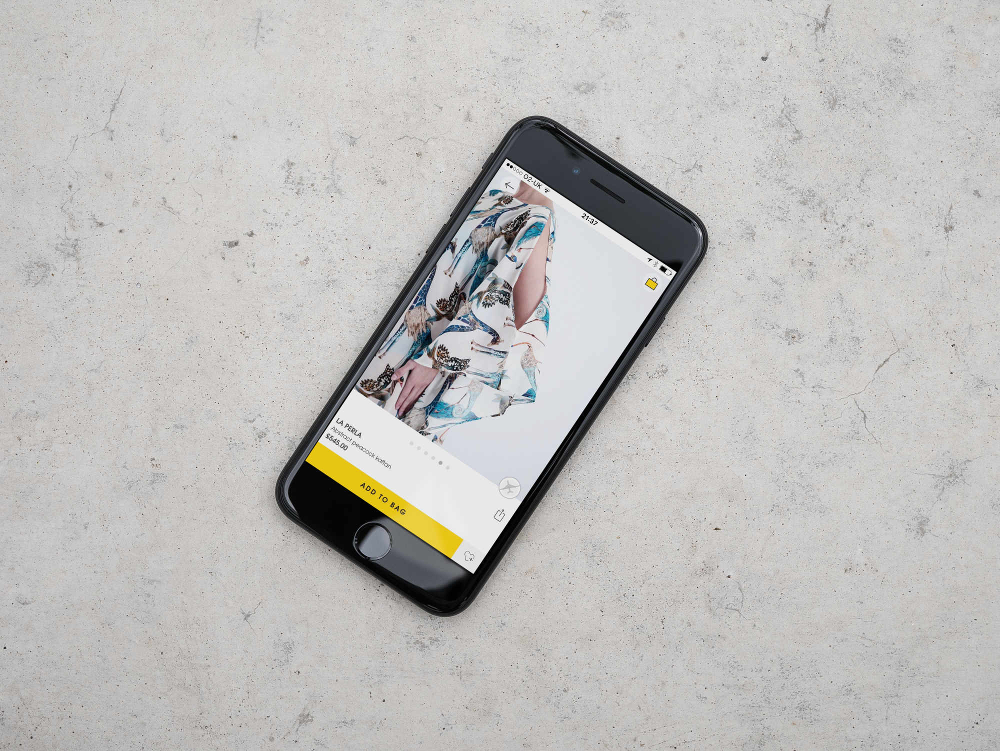
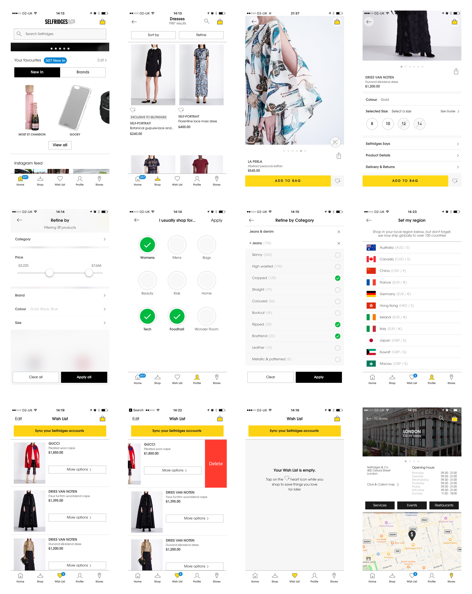

Selfridges iPhone
We were approached by Selfridges with the fantastic opportunity to design and build their first app to give them a presence in the mobile app space. They required a transactional shopping app as MVP, but also had ideas of small additional features to give the app some extra flair.
We presented to them the basic flow of our transactional apps, as follows: Homepage > TCAT (Top categories) > PLP (Product Listing Page) > PDP (Product Description Page) This flow is in keeping with their website, and of most other retailers. We used this as our basis for the app, and fit other pages around this (such as the store finder, wishlist and profile). We discussed this together during a workshop where we grouped features until the app took form.
Designing the product page
A key challenge for me was designing the PDP. For a retailer as large as Selfridges, these pages can often be packed full of information. For example, some products required stamps to denote international shipping. Shoes require different sizing to clothing. A bag with an embroidered message of your choice would require an input for this customisation. And the list goes on. In total, I had around 15 variations of the PDP alone.
We wanted to design a one-page PDP (without the need to scroll) which could incorporate gestures to reveal extra information. But as time went by and the reality of the requirements came into play, we realised it just wasn’t possible. The most user-friendly version was a long scrollable page where all required info could be added should it need to be.
The app was pulled together with the Selfridge’s brand in mind at every step. We worked very closely with the web designers at Selfridges to ensure the brand guidelines were followed correctly.
